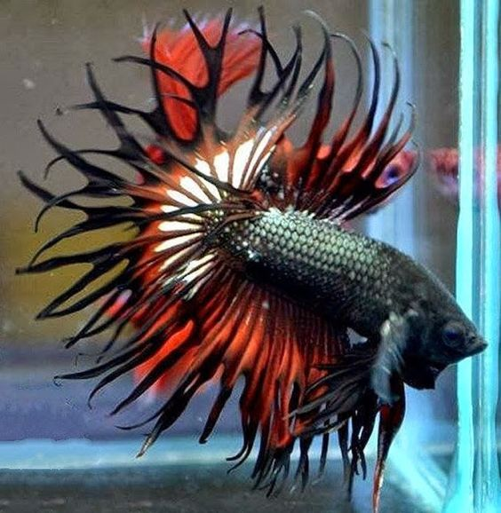

The Lifespan Of A Betta Fish
March 12, 2020
Lifespan of a Betta Fish in the Wild ?
Betta Fish That Are Found In The Rice Paddies:

The average lifespan of a betta fish in the wild is about two years. In the wild betta fish have a totally different environment.
They live in rice paddies and shallow waters. Betta fish was first found in Thailand.
These rice paddies are very dirty and the water condition is very bad in these rice paddies. They are polluted by waste etc.
When we grow betta fish in our fish tanks we take care of it very well and change the water every once a week so they live more in the aquariums than in their natural environment.
Betta fish are also known as fighter fish in their natural environment they fight a lot against each other for their territory because of fighting with each other sometimes they fight till they die drastically reducing their lifespan.
Male betta fish are more aggresive than the female betta fish. This is also another reason why they live for less number of years in the wild. The bettas which were found in the rice paddies were not as beautiful as the bettas we see today they were genetically modefied to make their fins very beautiful.
How long do bettas live in our tanks ?

Bettas live a lot more in our aquariums than they do in their natural habitat. Male betta fish take one year too develop their beautiful fins deveop and they get their beautiful colors too at this time.
This is the time the pet shop owners sell them. For a betta fish to live for a long time we need to care for it very properly we have to feed it regularly provide it a balanced diet of food every week.
Clean its tank once a week. If we do all this correctly then they can even live for five to six years. Infact the world record for the longest lived betta fish is 10 years.
Sounds amazing right !. The pet store owners have been very cruel to betta fish by putting them in small cups and expecting them to be happy in them and live happily but this is not true putting the betta fish in cups will reduce its lifespan in many ways its muscles would become very weak because there is very little or no space to swim around.
Most owners do not feed the betta fish regularly in the cups. Also even when the fish is sick they do not care about it and carry on with their work. The answer is bettas do not live for very long if they are kept in small cups like how they are kept in the pet stores.
How to increase the lifespan of a betta fish ?

To increase the life span of a betta fish we must first of all provide them a good aquarium. By a good aquarium I mean a tank that has the capacity of at least 5 gallons.
In which they will have some space to swim around. Putting some decorations is a great way for them to enjoy hiding.
These things will make them feel happy. Never keep two male betta fishs in the same tank as they are aggresive fish they will fight for territory if you want to have another betta then you would have to purchase another aquarium to keep it. Betta fish are warm water fishes so it is good if you use a heater in your betta tank.
As I have told before they used to live in rice paddies in Thailand were the water was already hot due to the climate there. It would be really great if we could also replicate the same in our aquarium.
Also it is necesary to use a filter in your aquarium to clean out the waste however we must make sure we do not have a very strong filter as betta fish cannot swim properly if the current from the filter is too much.
We must also make sure we provide our betta fish a balanced diet for knowing more about the diet best preferred for a betta fish. Checkout our article one betta fish food. We must make sure that we never overfeed our betta fish.
How to pick a healthy betta fish ?
An Ideal Healthy Betta Fish:
To pick a healthy betta fish we must look at the following points:
Should be active
Very bright and attractive color
Must Not Have Torn Or Damaged Fins
Must Not Have Bulging Eyes
Summary:
We can summarise all about the lifespan of a Betta Fish in short points as follows:
Average life span of a betta fish is about 2 to 3 years
Betta Fish Used To Live In Rice Paddies In Thailand
They Are Warm Water Tropical Fish
We Must Keep Male Betta Fish Seperately To Avoid Fights
Provide Them With A Good Diet To Keep Them Healthy
Provide An Aquarium With A Minimum Capacity Of 5 Gallons